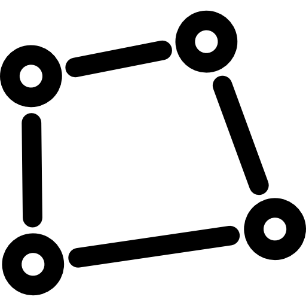

<div class="draw-main p-3">
    <span matTooltip="Draw polygon freehandly" [ngClass]="activeTool == 'freehand' ? 'active-tool' : ''"
        class="border p-2 draw-tool" (click)="startDraw('freehand')">
        
    </span>
    <span matTooltip="Draw line string" [ngClass]="activeTool == 'line' ? 'active-tool' : ''"
        class="border p-2 draw-tool" (click)="startDraw('line')">
        
    </span>
    <span matTooltip="Draw polygon" [ngClass]="activeTool == 'polygon' ? 'active-tool' : ''"
        class="border p-2 draw-tool" (click)="startDraw('polygon')">
        
    </span>
    <!-- <span [ngClass]="activeTool == 'marker' ? 'active-tool' : ''" class="border p-2 draw-tool"
        (click)="startDraw('marker')">
        
    </span> -->
    <span matTooltip="Add custom marker" [ngClass]="activeTool == 'custom-marker' ? 'active-tool' : ''"
        class="border p-2 draw-tool d-flex align-items-center justify-content-center" (click)="startDraw('custom-marker')">
        
    </span>
    <span matTooltip="Draw points" [ngClass]="activeTool == 'points' ? 'active-tool' : ''" class="border p-2 draw-tool d-flex align-items-center justify-content-center"
        (click)="startDraw('points')">
        
    </span>
    <span matTooltip="Draw rectangle" [ngClass]="activeTool == 'square' ? 'active-tool' : ''"
        class="border p-2 draw-tool" (click)="startDraw('square')">
        
    </span>
    <span matTooltip="Draw line freehandly" [ngClass]="activeTool == 'freehand-line' ? 'active-tool' : ''"
        class="border p-2 draw-tool" (click)="startDraw('freehand-line')">
        
    </span>
    <span matTooltip="Enter text on Map" [ngClass]="activeTool == 'add-text' ? 'active-tool' : ''"
        class="border p-2 draw-tool" (click)="startDraw('add-text')">
        <mat-icon> text_fields</mat-icon>
    </span>
    <span matTooltip="Simple select mode" [ngClass]="activeTool == 'simple-select' ? 'active-tool' : ''"
        class="border p-2 draw-tool" (click)="startDraw('simple-select')">
        
    </span>
    <span matTooltip="Layer edit mode" class="border py-2 draw-tool d-flex align-items-center justify-content-center"
        [ngClass]="activeTool == 'edit-mode' ? 'active-tool' : ''" (click)="editModeHandler()">
        <svg xmlns="http://www.w3.org/2000/svg" width="16" height="16" fill="currentColor" class="bi bi-pencil-square"
            viewBox="0 0 16 16">
            <path
                d="M15.502 1.94a.5.5 0 0 1 0 .706L14.459 3.69l-2-2L13.502.646a.5.5 0 0 1 .707 0l1.293 1.293zm-1.75 2.456-2-2L4.939 9.21a.5.5 0 0 0-.121.196l-.805 2.414a.25.25 0 0 0 .316.316l2.414-.805a.5.5 0 0 0 .196-.12l6.813-6.814z" />
            <path fill-rule="evenodd"
                d="M1 13.5A1.5 1.5 0 0 0 2.5 15h11a1.5 1.5 0 0 0 1.5-1.5v-6a.5.5 0 0 0-1 0v6a.5.5 0 0 1-.5.5h-11a.5.5 0 0 1-.5-.5v-11a.5.5 0 0 1 .5-.5H9a.5.5 0 0 0 0-1H2.5A1.5 1.5 0 0 0 1 2.5v11z" />
        </svg>
    </span>
    <span matTooltip="Undo changes" class="border p-2 draw-tool" (click)="undo()">
        <mat-icon>undo</mat-icon>
    </span>
    <span matTooltip="Redo changes" class="border p-2 draw-tool" (click)="redo()">
        <mat-icon>redo</mat-icon>
    </span>
    <span matTooltip="Delete features" [ngClass]="activeTool == 'delete-tool' ? 'active-tool' : ''"
        class="border p-2 draw-tool" (click)="startDraw('delete-tool')">
        <mat-icon>delete_sweep</mat-icon>
    </span>
</div>

<div class="px-3 toggle-div">
    <!-- <mat-slide-toggle class="d-block" (change)="addLabelHandler($event)">Add Label</mat-slide-toggle> -->
    <mat-slide-toggle class="d-block" (change)="getDrawContinousStatus($event)">Draw Continuously</mat-slide-toggle>
    <mat-slide-toggle class="d-block" (change)="getShowTipOnMouseStatus($event)">Show Tip On Cursor</mat-slide-toggle>
</div>

<div *ngIf="activeTool == 'custom-marker' || activeTool == 'add-text'">
    <h3 class="alert alert-danger text-dark mt-3 p-2 text-center border border-danger shadow-lg" style="font-size: 15px; line-height: 15px;">* Please use mouse right click for open feature form for marker and text</h3>
</div>

<div class="d-flex justify-content-center">
    <button class="mt-3 btn btn-sm btn-danger me-1" (click)="resetData()">Reset</button>
    <button class="mt-3 btn btn-sm btn-secondary" (click)="showDataTable()">Show Table</button>
</div>

<div class="d-flex justify-content-center">
    <button class="mt-3 btn btn-sm btn-warning me-1" (click)="showUploadDialog()">Upload</button>
    <button class="mt-3 btn btn-sm btn-success d-flex align-items-center" (click)="downloadData()">
        <svg xmlns="http://www.w3.org/2000/svg" width="16" height="16" fill="currentColor" class="bi bi-download"
            viewBox="0 0 16 16">
            <path
                d="M.5 9.9a.5.5 0 0 1 .5.5v2.5a1 1 0 0 0 1 1h12a1 1 0 0 0 1-1v-2.5a.5.5 0 0 1 1 0v2.5a2 2 0 0 1-2 2H2a2 2 0 0 1-2-2v-2.5a.5.5 0 0 1 .5-.5z" />
            <path
                d="M7.646 11.854a.5.5 0 0 0 .708 0l3-3a.5.5 0 0 0-.708-.708L8.5 10.293V1.5a.5.5 0 0 0-1 0v8.793L5.354 8.146a.5.5 0 1 0-.708.708l3 3z" />
        </svg>
        <span class="ms-1">Download</span>
    </button>
</div>